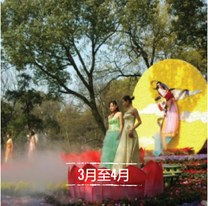
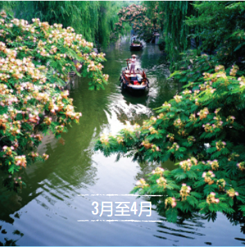

活动与节日
一年四季，苏州的节日都展示了古城无与伦比的美丽、多元文化和丰富的传统。从灿烂的花朵到壮观的龙舟，品尝正宗的苏州。
一定要围绕这些令人兴奋的庆祝活动中的一个（或多个）计划您的旅行。

常熟尚湖牡丹秀
在24英亩郁郁葱葱的花园中观赏和闻到5万多株牡丹。受周围植物的启发，客人还可以欣赏美术和表演艺术。
了解更多

太仓美食节
太仓是一座秀美田园的江南小城，历史悠久，也是一座激越开放的古今大港，开放包容，更是一座旅游资源丰富、各类美食齐全的幸福之城。
了解更多

杜鹃花旅游节
芬芳、鲜艳的粉色杜鹃覆盖着树木，变身山丘，倒映在水面上。这个风景如画的绿洲是苏州最受欢迎的景点之一。